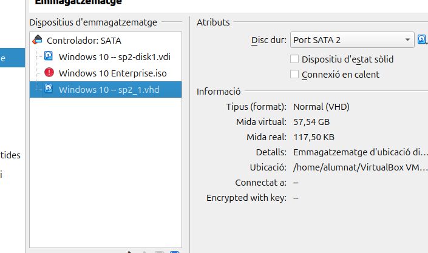
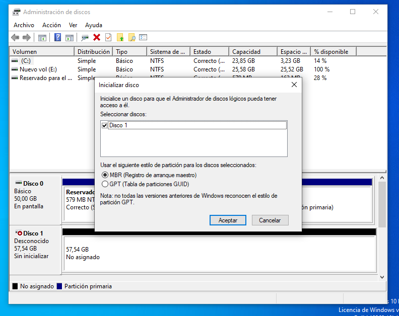
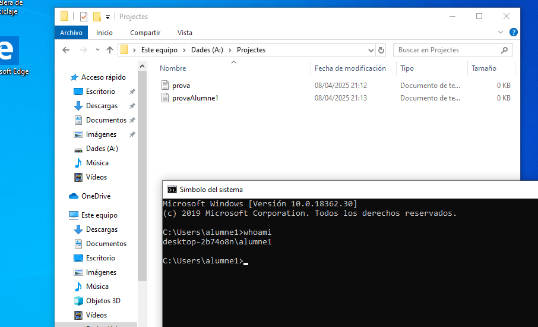

Gestió de la Informació del Sistema i Administració
1. Preparació del sistema
Afegir un Nou Disc Virtual a la Màquina Virtual
Primer de tot, obrim la VirtualBox i seleccionem la màquina a la qual volem afegir el disc. Seguidament, anem a les configuracions:
Afegim un nou disc virtual donant-li al símbol del disc, després a "Crear". En la finestra, seleccionem un VHD (Virtual Hard Disk).
Donem a "Següent" i seleccionem la mida del disc virtual. Després, cliquem a Finalitzar.
I finalment, el seleccionem per poder-lo tenir a la nostra màquina, com podem veure:

Iniciar Windows i Obrir Gestió de Discs
Iniciem la màquina virtual amb Windows:
Accedim a l'Administrador de discos buscant-lo a la barra de cerca:

Inicialitzar el Disc
Com hem pogut veure a la imatge que tornem a tenir a continuació, ens demana inicialitzar el disc 1.
Seleccionarem l'estil de partició GPT, ja que és un estil per a sistemes més moderns i amb més optimització. A continuació, li donem a Aceptar per poder tenir el disc correctament com es veu:
Crear Particions
Primera partició
En aquest punt farem la creació de les particions. Per fer-ho, fem clic dret sobre l'espai no assignat i seleccionem Nou volum simple.
Una vegada dins, li donem a Següent, definim la mida que, en aquest cas, és la meitat.
A continuació, seleccionem la lletra del disc, que serà la lletra A i a aquest disc l'anomenarem "Dades". Finalment, escollim el sistema de fitxers NTFS i obtenim la següent configuració:
Segona partició
De la manera anterior, tornem a crear un Nou volum simple en l'espai no assignat. Li posem l'espai que queda i la lletra B amb el nom "Portable".
Finalment, escollim FAT32 com a sistema de fitxers. I trobem les següents propietats:
Resum del Disc 1 amb les seves dues particions
Comprovar amb Diskpart
En el cas que volem assignar lletres als volums de nou, hem de fer clic sobre cada volum i seleccionar Canviar la lletra i rutes d'accés de unitat....
Si volem comprovar la configuració amb Diskpart, obrim una finestra de Símbol del sistema com a administrador i escrivim diskpart i donem Enter, s'obrirà la següent finestra:
A la línia de comandes escrivim list disk per veure els discs i després list volume per veure els volums amb les seves lletres assignades i verificar que els volums "Dades" i "Portable" tenen les lletres corresponents.
2. Usuaris
Crear dos usuaris locals: "alumne1" i "alumne2"
A continuació crearem dos usuaris. Per fer-ho, pressionem Windows + R, escrivim lusrmgr.msc i donem Enter.
Això obrirà la finestra de Usuaris i Grups Locals:
Crear l'usuari "alumne1"
Per crear-lo, anem a l'esquerra i seleccionem Usuaris. Seguidament, fem clic dret sobre la finestra central i seleccionem Usuari nou.
Omplim els camps de la següent manera i donem a Crear:
Crear l'usuari "alumne2"
I tornem a repetir els mateixos passos que en el punt anterior, però creant un nou usuari amb el nom de alumne2.
Visió dels usuaris creats
Afegir-los al grup "Limitats"
Creació del grup
Primer de tot, hem de crear el nou grup anomenat "Limitats".
Per fer-ho, hem d'anar a l'esquerra de la finestra de Usuaris i Grups Locals, i seleccionar Grups.
Seguidament, fem clic dret en la finestra central i seleccionem Grup nou.
Dins de la finestra, li donem el nom de Limitats al grup i passem al següent apartat per afegir usuaris:
Afegir els usuaris al grup
Una vegada estem creant el grup, anem a baix a Afegir per afegir usuaris.
Dins escrivim el nom dels dos usuaris de la següent manera:
I una vegada escrits, donem a Aceptar i Crear per poder tenir el grup finalitzat com es pot veure:
3. Script de còpia i automatització
Afegir tercer disc virtual
En aquest punt, hem d'afegir un nou disc virtual a la màquina virtual.
Ho fem de la mateixa manera que en el apartat anterior.
Serà un disc virtual de 50GB:
Iniciem Windows i obrim Windows + R i escrivim diskmgmt.msc.
Donem a inicialitzar el disc en GPT:
Creem una partició i la formategem com NTFS. L'anomenem Backups, i li assignem la lletra Z:

Disc Backups:
Crear carpeta CopiesUsuaris dins de Backups
Creem la carpeta CopiesUsuaris dins de Backups com es pot veure a continuació:
Crear script .bat de còpia
A continuació, creem un script .bat que es dirà copia_usuaris.bat i contindrà la comanda següent:
@echo off
xcopy "C:\Users\%USERNAME%" "Z:\CopiesUsuaris\%USERNAME%" /E /I /Y /H
Es divideix en les següents parts:
@echo off: Amaga les ordres mentre s’executen (fa que la finestra sigui més neta).%USERNAME%: S’utilitza per agafar automàticament el nom de l’usuari actual.xcopy: Ordre per copiar arxius i carpetes./E: Copia totes les subcarpetes, incloses les buides./I: Assumeix que el destí és una carpeta./Y: No demana confirmació per sobreescriure arxius./H: Inclou arxius ocults i de sistema.
Script
Primer de tot obrim gpedit.msc amb Windows + R:
Accedim a Configuració d'usuari → Configuració de Windows → Scripts (Inici/tancament de sessió) → Inici de sessió
Donem a Iniciar sessió i, seguidament, en la finestra afegim l'script en l'opció que ens surt:
Hi donem a Acceptar i Aplicar.
Assigna l’script a alumne1 i alumne2
Primer de tot, iniciem sessió a alumne1 perquè es creïn les seves carpetes d'usuari:
Fem el mateix amb alumne2 i tenim tots els usuaris iniciats, encara que podem tancar sessió ja:
Iniciem de nou la sessió de l'usuari alumne1 després d'haver tancat sessió, fem el mateix amb l'altre usuari.
Ara, una vegada iniciat el sistema amb un dels usuaris, s'hauria de crear una còpia de les seves carpetes a la de Backups, com podem veure a continuació:
4. Verificació de quota
Primer de tot, hem d'obrir el Administrador de discs i fer clic dret damunt de la partició Dades i anar a Propietats.
Anem a la finestra Quota i habilitem l'administrador de quotes. Seguidament, limitem l'espai al mínim per fer les proves, perquè bloquegi.
El que hem de fer és entrar a Valors de quota i aplicar-los a cada usuari, com es veu a continuació per a alumne1:
I per a alumne2:
Ara anem i omplim la carpeta amb més de 10KB, llavors surt aquest missatge quan ja hem superat el límit especificat de quota. (Com es pot veure a la dreta, el fitxer pesava 7KB abans de guardar-lo, però després ja ha superat el límit)
5. Gestió de processos i serveis
Llistar processos actius
Per llistar els processos actius en Windows de manera que mostri una instància del moment en què s'executa la comanda, s'ha de fer ús de la comanda tasklist > C:\Users\%USERNAME%\processos_inici.txt, d'aquesta manera enviem el llistat de processos a un fitxer:
Taula de processos prescindibles
Els següents processos son no essencials per al sistema/usuaris (Teams.exe no esta al sistema):
| Nom del procés | Memòria usada | Justificació |
|------------------|---------------------------|-------------------------------------|
| OneDrive.exe | 42.504 MB | No s'utilitza, carrega en segon pla |
| SkypeApp.exe | 97.969 MB | Inactiu i innecessari |
Exemple del de SkipeApp.exe:
Eliminar processos manualment
Primer de tot farem una captura del procés de OneDrive.exe on podem veure que està en la llista de processos actuals:

Seguidament, fem ús de la comanda taskkill /IM OneDrive.exe /F que finalitzarà el procés i, amb el /F, el finalitzarà de manera immediata sense cap confirmació (IMPORTANT: hem de fer-ho amb els permisos d'Administrador des de la CMD):
Tornem a fer tasklist per comprovar que ja no tenim el procés. Ho podem fer amb una cerca exacta amb la següent comanda:
I finalment veiem que el procés ha sigut tancat amb èxit.
Automatitzar-ho a l’inici de sessió
Afegeix aquestes línies al final de copia_usuaris.bat (He canviat el de Teams.exe per SkypeApp.exe ja que no tinc el primer):
taskkill /IM OneDrive.exe /F
taskkill /IM SkypeApp.exe /F
 Per tal que quan inicien sessió es tanquin els processos.
Per tal que quan inicien sessió es tanquin els processos.
Iniciem amb alumne2 i fem una cerca dels processos. Podem veure que ja estan tancats i no els tenim:
Documentació de més
En el cas que matem el procés explorer.exe, es tancaria l’escriptori de manera que tot es tornaria de negre.
Però per solucionar-ho hauríem de fer ús de les següents comandes: Ctrl+Shift+Esc -> Arxiu -> Executar nova tasca -> explorer.exe
Efectivament, si matem el procés es torna de color negre:
Anem a executar una nova tasca:
Escrivim explorer.exe i donem Acceptar:
I tornem a tenir el fons de l'escriptori de color com estava abans de tot:
Finalment, podem afegir que eliminar processos innecessaris és bo, ja que redueix l'ús de la RAM i la CPU. També millora bastant el rendiment, especialment en les màquines virtuals.
Per aquest motiu, sempre hem de tenir optimitzat el nostre sistema i evitarem errors innecessaris.
6. Gestió de permisos (ACLs)
Què són les ACLs?
ACL (Access Control List) = llista detallada de permisos per fitxer/carpeta.
Cada ACE (Access Control Entry) diu: - Quin usuari o grup afecta - Quins permisos té (lectura, execució, control total, etc.) - Si són heretats o directes
Crear carpeta
Primer de tot, hem de crear una carpeta amb permisos d'administrador.
Obrim la CMD com a administrador i creem la carpeta A:\Projectes en la partició Dades amb la comanda mkdir A:\Projectes (Per fer ús una mica de les comandes)
Assignar permisos al grup "Limitats"
Fem els següents passos:
- Fem clic dret a la carpeta, després Propietats, Seguretat i Opcions avançades
- Li donem a Canviar permisos i desactivem l'herència. Sobretot, li donem a la primera opció de conservació dels permisos:
- Eliminem el grup de
Usersseleccionant-lo i donant a Quitar i també als altres usuaris.
- I finalment, afegim el grup Limitats amb Control total, ho farem donant a Agregar. Seguidament, li donem a dalt on diu Seleccionar una entitat de seguretat i en la següent finestra escrivim el nom del grup i donem a Acceptar:
I sobretot seleccionem Control total i sortim acceptant:
Comprovar amb alumne1
Iniciem sessió amb alumne1 i, a continuació, editem un fitxer a A:\Projectes i ha de funcionar correctament, com podem veure a la imatge, que no ens dóna cap error i el crea sense cap problema:

Aplicar excepció per alumne2
Si intentem accedir a la carpeta amb alumne2, ens mostrarà un error de que no tenim permisos, ja que li hem tret els permisos que tenia amb icacls "A:\Projectes" /grant:r alumne2:(R)
Consultar permisos aplicats
Per consultar els permisos aplicats a la carpeta, fem ús de la comanda:
icacls "D:\Projectes"
El que ens indica es que els grups "Administradors", el compte "SYSTEM" i el grup "Limitats" tenen Control Total sobre la carpeta "A:\Projectes" i que aquesta configuració s'hereta als elements que conté.